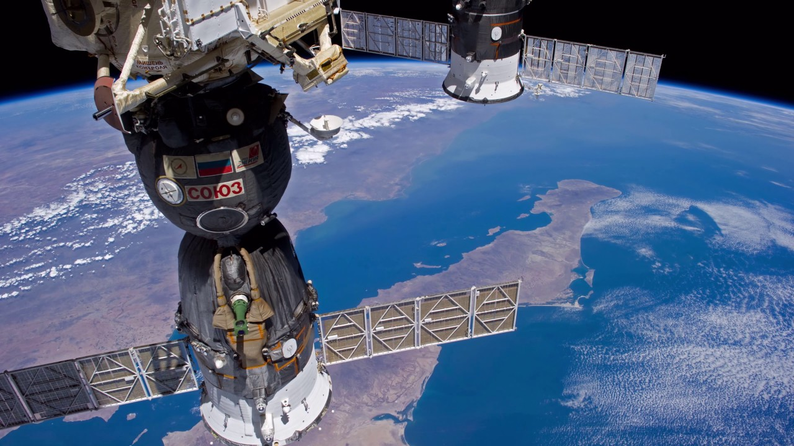

Astronomy Picture of the Day
*Select A Specific Date To View A Specific Astronomy Picture*
The International Space Station (ISS)
The International Space Station (ISS) is the largest modular space station currently in low Earth orbit. It is a multinational collaborative project involving five participating space agencies: NASA (United States), Roscosmos (Russia), JAXA (Japan), ESA (Europe), and CSA (Canada). The ownership and use of the space station is established by intergovernmental treaties and agreements. The station serves as a microgravity and space environment research laboratory in which scientific research is conducted in astrobiology, astronomy, meteorology, physics, and other fields. The ISS is suited for testing the spacecraft systems and equipment required for possible future long-duration missions to the Moon and Mars.